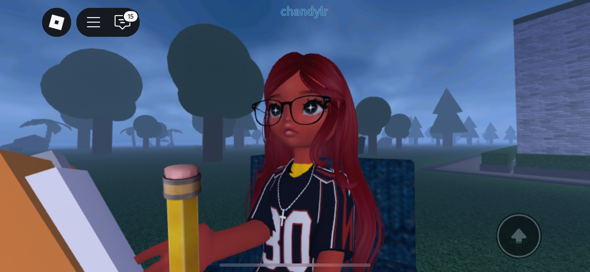
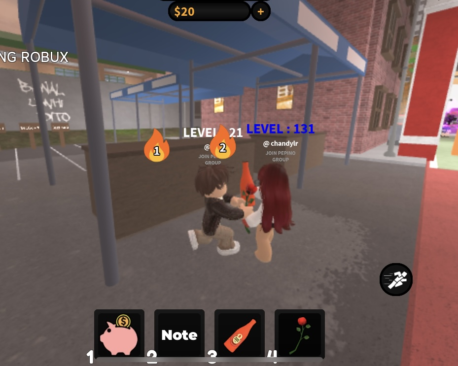

let's go back to july 18, 2024 — literally the most random day ever. i met you sa roblox, sa game na therapy. at first, random lang talaga tayo, like two people na nagkataon lang na nasa same game. then we started interacting, nagkulitan, nagbiruan, and somehow naging comfortable tayo sa isa't isa. hanggang sa binigay ko pa ig ko and you actually followed me. and not gonna lie, from the first time i saw you, na-attract na talaga ako sa'yo. like, bakit ba kasi ang ganda ng ngiti mo? i even called you baby agad, which honestly. the audacity. HAHAHA. pero i guess that's how everything started.
a little something for you
hi, pranz. 💙
i made this little something for you. i don't really know how you're going to react, but i hope you stay until the end. 🦋
our story
how it all started
and this was the beginning. 🦋
our first interaction
this was literally one of our first interactions. 😭
ikaw yung humahabol sa'kin tapos nagsosorry ka pa after. and honestly, kasi nahuli kita may kausap iba 💔
ang random talaga. from a simple game of Roblox, to talking, laughing, becoming comfortable with each other, and eventually becoming someone important to me.
look at us. we really had no idea what was coming. 💙
one of my favorite memories

who would've thought that a random game would lead me to you?
then somehow...
it became us. 🤍
somehow, that random interaction turned into something neither of us expected. naging m.u. tayo, and honestly, ang saya natin. i really loved how natural everything felt between us. after some time, narealize ko na hindi na lang talaga simpleng attraction yung nararamdaman ko, so i took the courage to court you. pero you said no because you weren't ready yet and you didn't want an ldr. of course, it hurt, and i'm not gonna pretend na hindi.
pero kahit nireject mo ako, hindi naman talaga tayo tuluyang nawala sa isa't isa. we still talked, naging bffs ulit tayo, and somehow, we were still happy. we continued sharing random things, updating each other, laughing together, and just being there for one another kahit wala tayong label.
somehow, we came back
we never really stopped finding each other. 💙
there were times when we both tried to move forward. may mga nakausap tayo, may mga moments na parang okay, maybe we're finally moving on. pero somehow, we kept finding our way back to each other. eventually, we confessed again and talked about what we really felt, and that's when i realized na maybe some feelings really don't disappear just because you try to move forward.
kahit ang daming nangyari between us, somehow, there was still something that kept bringing us back to each other. and if there's one memory i'll always be grateful for, it's still the way we met. july 18, 2024.
because who would've thought na a random game of roblox would introduce me to someone who would become this important to me? if i didn't join that game, if we never interacted, or if i never gave you my ig, maybe we wouldn't even be here right now.
and honestly, ang crazy lang isipin.
and here's another one

i'm really glad our paths crossed. 💙
what you mean to me
you became more than just someone i met online. 💙
somewhere along the way, you became someone i'm comfortable with, someone i look for, someone i want to tell things to, and someone i somehow keep finding my way back to.
we've already been through different versions of us. we've seen each other as strangers, m.u., almost something more, friends, and everything in between.
and despite all of that, you're still someone i want in my life. i don't know if that's fate or we're just both really bad at letting go. 😭 but whatever it is, i'm just really grateful that after everything, you're still here.
taking the risk
i don't want to keep wondering "what if?"
i've been thinking about this for a while, and honestly, i'm scared too. i know what happened before, i know you weren't ready, and i know ldr was something you didn't want.
but i also realized that i don't want fear to be the reason i never try again. i want to take the risk with you. not because i know what the ending will be, but because i know that you're someone worth taking that risk for.
i want to make more memories with you, more random conversations, more updates, more laughs, more late-night talks, and more moments that we'll look back on someday and say, "ang random talaga ng story natin."
but this time, i don't want to make those memories with you as just your friend. i want to know what it's like to intentionally choose you, to be there for you, and to slowly build something with you.
and i understand you
i know you're scared of losing our friendship. 🤍
i know one of the things that's probably making this harder for you is the thought of losing our friendship. and honestly, i understand why you'd be scared of that. we've been through so much together, and i don't want you to feel like saying no to me would mean losing me as your friend. i don't want that either.
our friendship means so much to me, and i don't want you to feel like you have to choose between keeping me in your life and giving me a chance.
that's why i'm not asking you to decide everything right away. i want you to really think about what you want and what makes you comfortable. if you're scared that things might change between us, i understand. i'm scared of that too.
but at the same time, i don't want us to keep wondering what could've happened if we actually gave this a chance.
what i actually want
i don't want to rush anything. 💙
if you let me court you, i don't expect everything to suddenly change. ayoko rin naman na overnight kailangan perfect na tayo. i just want to start properly this time.
i'll still be the same person na pwede mong tarantahin, kausapin about random things, sabihan ng kung ano-ano, and someone na pwede mong pagkwentuhan ng kahit anong bagay. pero this time, i'll also be someone who's intentionally trying to win your heart.
i want to know you more. i want to learn the little things you like, the things that make you happy, the things that annoy you, and even the random things you probably think aren't important.
i want to be someone you can talk to when you're excited about something, when you had a bad day, or even when you just want to tell someone something completely random.
no pressure, promise. 🤍
i don't want you to say yes just because you feel like you should. i remember why you said no before, and i respect that.
if you're still unsure, okay lang. kung kailangan mo ng time, i'll give you time. i don't want to force an answer from you.
i'd rather wait for an honest answer from you than have a yes that you didn't really mean. because if something is going to happen between us, i want it to happen because we both genuinely want it.
and if you need time to think, take it. i'm not going to rush you. i just want you to know that i'm willing to take the risk while still protecting the friendship that brought us this far.
before i ask you
because before i ever wanted you as someone i could court, you were already someone i genuinely didn't want to lose.
i made this because i wanted to be honest with you, not because i wanted to put pressure on you. i like you, i care about you, and i want to see if there's something more for us.
i don't need you to promise me forever. i don't need you to give me an answer right away. i just want the opportunity to start again, but this time, with intention.
i want to court you. i want to get to know you more. i want to make memories with you. i want to see where this can go if we actually give it a chance.
and if someday you realize that i'm not the person you want, i'll respect that too. but if there's even a small part of you that wants to see where this could lead, then let me try. let me show you. let me take this risk with you.
pranz.
can i court you?
you don't have to answer immediately. i just want you to know how i feel.
okay. i'm actually happy right now 🥹
thank you, pranz. 💙
thank you for giving me a chance. i won't rush you, and i won't take this chance for granted.
i'll take my time getting to know you, making memories with you, and showing you that i really mean everything i said.
let me court you properly. 🫶🏻
that's okay.
take your time, pranz. 🤍
you don't have to decide right now. i meant everything i said, and i want you to be comfortable with whatever you choose.
i'm not going anywhere just because you need time. i'll respect your decision.
i'm just glad you stayed until the end and listened to everything i wanted to say. 🥹